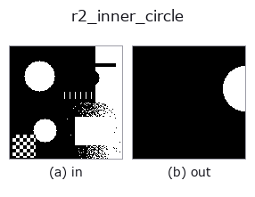

region op• 資料種類:region → region
• 呼叫:fullseye.apply(img, "r2_inner_circle", a=0.5, b=0.5)(2-D 的模型是一張圖 + 兩個純量旋鈕 a,b∈[0,1])
• HALCON 對應:inner_circle(其含義與參數可參考 HALCON 手冊)

*圖為在 128×128 合成輸入上實際執行的輸出。左為輸入，右為輸出。點雲以俯視散點顯示(亮度 = z)，一維序列為折線，體資料為沿 z 的最大值投影，影片為中間影格，複數影像為振幅；無法成像的回傳值直接顯示數值。*
掃描旋鈕 a(0.1 / 0.5 / 0.9，另一旋鈕取預設):
▸ r2_inner_circle: 旋鈕 a 掃描 (文件網站)
*旋鈕 b 不改變輸出(實測: 0.1 / 0.5 / 0.9 相同)。*
階段(前置運算子 → 本運算子，由左至右):
▸ r2_inner_circle: 處理階段 (文件網站)
換別的影像(合成場景 / 照片 / 硬幣。上排為輸入，下排為對應輸出。旋鈕取預設):
▸ r2_inner_circle: 其他輸入影像 (文件網站)
把最大內接圓畫成遮罩(a 縮放所畫半徑;a=0.5 為精確)。
將區域的最大內切圓繪製為遮罩。以 > 0.5 把輸入轉為前景遮罩，以 scipy.ndimage.distance_transform_edt 求各前景像素到最近鄰背景像素的距離，以給出其最大值 r0 的像素為中心 (cy, cx) (若有多個最大值，取列優先的第一個像素)。繪製的半徑為 r = r0 * (0.6 + 0.8*a)，a=0 時為 0.6 倍，a=0.5 時就是 r0，a=1 時為 1.4 倍(a 截斷(clip)到 [0,1]，非有限值時取 0.5)。b 未使用。
回傳值是與輸入同形的 float64 0/1 遮罩(圓盤 (y-cy)^2+(x-cx)^2 <= r^2)。沒有前景時全為零。座標為 (row, col)。
注意：r0 是「到背景像素中心的距離」，因此即使 a=0.5，繪製的圓盤也可能超出區域邊緣約 1 個像素(實測：10x20 的矩形超出 2 個像素，半徑 7 的圓盤超出 12 個外側像素)。若要嚴格收在內側，可將 a 略微調低。區域由多個連通元件構成時，內切圓也只有 1 個(取最粗的元件的)。3 維陣列 (H,W,C) 會被攤平為 (H, W*C)，因此不要傳入彩色影像。前級可用 threshold 或 select_largest，與之成對的外接圓是 r2_smallest_circle(兩者的半徑比可作為圓度的粗略指標)。
• 範例資料目錄(下載 URL / 授權) —— 2-D 用 skimage.data(BSD/公有領域)加合成圖,3-D 給出真實資料源(Stanford/PDS 等)的下載 URL。
• 運算子來歷與參考文獻 —— 該運算子族所依據的研究/方法出處。
• 演算法的正典(作者、年份)與用途見上面的族使用指南。
下面的程式已確認可以執行(與圖相同的輸入)。在 Studio 說明中，此區塊會變成按鈕，可當場載入並執行。
threshold 0.50 0.50 r2_inner_circle 0.50 0.50
• gallery2d_region — py -3.11 examples/gallery2d_region.py
region 作為輸入)identity · reg_erode · reg_dilate · reg_open · reg_close · fill_holes · select_largest · remove_small
region)reg_erode · reg_dilate · reg_open · reg_close · fill_holes · select_largest · remove_small · invert_region
*Provenance: ops.py — 2D 運算子登記表。本條目由 tools/opdocs.py md 自動產生(請勿手動編輯)。*
© 2026 Kazufumi Furuse — Fullseye operator documentation. Licensed under Apache-2.0.